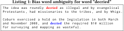

DOI: https://doi.org/10.1145/3184558.3191640
WWW '18: Proceedings of The Web Conference 2018, Lyon, France, April 2018
Quality in Wikipedia is enforced through a set of editing policies and guidelines recommended for Wikipedia editors. Neutral point of view (NPOV) is one of the main principles in Wikipedia, which ensures that for controversial information all possible points of view are represented proportionally. Furthermore, language used in Wikipedia should be neutral and not opinionated.
However, due to the large number of Wikipedia articles and its operating principle based on a voluntary basis of Wikipedia editors; quality assurances and Wikipedia guidelines cannot always be enforced. Currently, there are more than 40,000 articles, which are flagged with NPOV or similar quality tags. Furthermore, these represent only the portion of articles for which such quality issues are explicitly flagged by the Wikipedia editors, however, the real number may be higher considering that only a small percentage of articles are of good quality or featured as categorized by Wikipedia.
In this work, we focus on the case of language bias at the sentence level in Wikipedia. Language bias is a hard problem, as it represents a subjective task and usually the linguistic cues are subtle and can be determined only through its context. We propose a supervised classification approach, which relies on an automatically created lexicon of bias words, and other syntactical and semantic characteristics of biased statements.
We experimentally evaluate our approach on a dataset consisting of biased and unbiased statements, and show that we are able to detect biased statements with an accuracy of 74%. Furthermore, we show that competitors that determine bias words are not suitable for detecting biased statements, which we outperform with a relative improvement of over 20%.
ACM Reference Format:
Christoph Hube and Besnik Fetahu. 2018. Detecting Biased Statements in Wikipedia. In WWW '18 Companion: The 2018 Web Conference Companion, April 23–27, 2018, Lyon, France. ACM, New York, NY, USA 8 Pages. https://doi.org/10.1145/3184558.3191640
Wikipeda is one of the largest collaboratively created encyclopedias. Its community of editors consist of more than 32 million registered editors only in the English Wikipedia. However, only a small minority, specifically 127,000 editors are active1. Due to the diverse demographics and interests of editors, to maintain the quality of the provided information, Wikipedia has a set of editing guidelines and policies.
One of the core policies is the Neutral Point of View (NPOV)2. It requires that for controversial topics, Wikipedia editors should proportionally represent all points of view. The core guidelines in NPOV are to: (i) avoid stating opinions as facts, (ii) avoid stating seriously contested assertions as facts, (iii) avoid stating facts as opinions, (iv) prefer nonjudgemental language, and (v) indicate the relative prominence of opposing views.
Currently, there are approximately 40,000 Wikipedia pages that are flagged with NPOV (or similar quality flaws) quality issues. These represent explicit cases3 marked by Wikipedia editors, where specific Wikipedia pages or statements (sentences in Wikipedia articles) are deemed to be in violation with the NPOV policy. Recasens et al. [17] analyze these cases that go against the specific points from the NPOV guidelines. They find common linguistic cues, such as the cases of framing bias, where subjective words or phrases are used that are linked to a particular point of view (point (iv)), and epistemological bias which focuses on the believability of a statement, thus violating points (i) and (ii). Similarly, Martin [11] shows the cases of biases which are in violation with all guidelines of NPOV, an experimental study carried out on his personal Wikipedia page4.
Ensuring that Wikipedia pages follow the core principles in Wikipedia is a hard task. Firstly, due to the fact that editors provide and maintain Wikipedia pages on a voluntarily basis, the editor efforts are not always inline with the demand by the general viewership of Wikipedia [21] and as such they cannot be redirected to pages that have quality issues. Furthermore, there are documented cases, where Wikipedia admins are responsible for policy violations and pushing forward specific points of view on Wikipedia pages [2, 5], thus, going directly against the NPOV policy.
In this work, we address quality issues that deal with language bias in Wikipedia statements that are in violation with the points (i) – (iv). We classify statements as being biased or unbiased. A statement in our case corresponds to a sentence in Wikipedia. We address one of the main deficiencies of related work [17], which focuses on detecting bias words. In our work, we show that similar to [13], words that introduce bias or violate NPOV are dependent on the context in which they appear and furthermore the topic at hand. Thus, our approach relies on an automatically generated lexicon of bias words for a given set of Wikipedia pages under consideration, and in addition to semantic and syntactic features extracted from the classified statements.
As an example of language bias consider the following statement:
The word shocked introduces bias in this statement since it implies that “putting a Soviet Union flag in his office” is a shocking act.
To this end, we make the following contributions in this work:
Research on bias in Wikipedia has mostly focused on different topics such as culture, gender and politics [1, 8, 20] with some of the existing research referring to language bias.
Greenstein and Zhu[4] analyze political bias in Wikipedia with a focus on US politics. They use the approach introduced by Gentzkow and Shapiro[3] that was initially developed to determine newspaper slant. It relies on a list of 1000 terms and phrases that are typically used by either republican or democratic congress members. Greenstein and Zhu search for these terms and phrases within Wikipedia articles about US politics to measure in which spectrum (left or right leaning politics) these articles are. They find that articles on Wikipedia used to show a more liberal slant in average but that this slant has decreased over time with the growth of Wikipedia and more editors working on the articles. For the seed extraction part of the approach we present in this paper we also use articles related to US politics but instead of measuring political bias our approach simply detects biased statements using features that are not directly related to the political domain and therefore can also be used outside of this domain. Our extracted bias lexicon contains mostly words that are not directly related to politics.
Iyyer et al.[8] introduce an approach based on Recursive Neural Networks to classify statements from politicians in US Congressional floor debates and from ideological books as either liberal or conservative. The approach first splits the sentences into phrases and classifies each phrase separately before incrementally combining them. This allows for more sophisticated handling of semantic compositions. For example the sentence They dubbed it the ”death tax” and created a big lie about its adverse effects on small businesses introduces liberal bias even though it contains the more conservatively biased phrase death tax. For sentence selection they use a classifier with manually selected partisan unigrams as features. Their model reaches up to 70% accuracy.
Yano et al.[22] use crowdsourcing and statements from political blogs to create a dataset with the degree of bias and the type of bias (liberal or conservative) given for each statement. For sentence selection they use features such as sticky bigrams, emotion lexicons [15], and kill verbs. They also ask the workers for their political identification and find that conservative workers are more likely to label a statement as biased.
Wagner et al.[20] use lexical bias, i.e. vocabulary that is typically used to describe women and men, as one dimension among other dimensions to analyze gender bias on Wikipedia.
Recasens et al.[17] tackle a language bias problem that is similar to our problem. Given a sentence with known bias they try to identify the most biased word using a machine learning approach based on logistic regression and mostly language features, i.e. word lists containing hedges, factive verbs, assertive verbs, implicative verbs, report verbs, entailments, and subjectives. They also use part of speech and a bias lexicon with words that they extracted by comparing the before and after form of Wikipedia articles for revisions that contain a mention of POV in their revision comment. The bias lexicon contains 654 words including many words that do not directly introduce bias, such as america, person, and historical. In comparison the approach for extracting bias words presented in this paper differs strongly from their approach and our bias lexicon is more comprehensive including almost 10,000 words. Recasens et al. report accuracies of 0.34 for finding the most biased word and 0.59 for having the most biased word among the top 3 words. They also use crowdsourcing to create a baseline for the given problem. The results show that the task of identifying a bias word in a given sentence is not trivial for human annotators. The human annotators achieve an accuracy of 30%.
Another important topic in the context of Wikipedia is vandalism detection [16]. While vandalism detection uses some methods that are also relevant for bias detection (e.g. blacklisting), it is important to notice that bias detection and vandalism detection are two different problems. Vandalism refers to cases where editors deliberately lower the quality of an article and are typically more obvious. In the case of bias, editors might not be aware that their contribution violates the NPOV.
In this section we introduce our approach for language bias detection. Our approach consists of two main steps: (i) first, we construct a lexicon of bias words in Section 3.1, and (ii) second, in Section 3.2, based on the bias word lexicon, and other features which analyze statements at the syntactic and semantic level, train a supervised model that determines if a statement is either biased or unbiased.
In the first step of our approach, we describe the process of constructing automatically a lexicon of bias words. Bias words vary across topics and language genres, and as such generating automatically such lexicons is not trivial. However, for a set of already known words that might stir controversy or known to be inflammatory, recent advances in word representations like word2vec, are quite efficient in revealing words that are similar or used in similar context for a given textual corpora.
The process of constructing a biased word lexicon consists of two steps: (i) seed word extraction, and (ii) bias word lexicon construction.
Seed Words. . To construct a high quality bias word lexicon for a domain (e.g. politics), an important aspect is to find a set of seed words from which we can expand in the corresponding word vector space and extract words that indicate bias. In this step, where minimal manual efforts are required, the idea is to use word vectors from words are expected to have a high density of bias words. In this way, we identify seed words in an efficient manner.
Therefore, we use a corpus where we expect a higher density of bias words than in Wikipedia. Conservapedia5 is a Wiki shaped according to right-conservative ideas, including strong criticism and attacks especially on liberal politics and members of the Democratic Party of the United States. Since no public dataset is available, we crawl all Conservapedia articles under the category “Politics” (and all its subcategories). The dataset comprises a total of 11,793 articles6, from which we compute word representations through word2vec approach.
To expand the seed word list and thus have high quality bias word lexicon, we use a small set of seed words that are associated with a strong political ideology between left and right in the US (e.g. media, immigrants, abortion). For each word we manually go through the list of closest words in their word representation and extract words that seem to convey a strong opinion. For example, among the top–100 closest words for the word media are words such as arrogance, whining, despises and blatant. We merge all extracted words to one list. The final seed list contains 100 bias words.
Bias Word Extraction. Given the list of seed words, we extract a larger number of bias words using the Wikipedia dataset of latest articles7, from which we compute word embeddings using word2Vec with the skip-gram model. In the next step we exploit the semantic relationships of word vectors to automatically extract bias words given the seed words and a measure of distance between word vectors. Mikolov et al.[12] showed that within the word2Vec vector space similar words are grouped close to each other because they often appear in similar context. A trivial approach would be to simply extract the closest words for every seed word. In this case, if the seed word is a bias word, we would presumably retrieve bias words but also words that are related to the given seed word but are not bias words. For example for the seed word “charismatic” we find the word “preacher” among the closest words in the vector space.
To improve the extraction, we make use of another property of word2Vec. Instead of extracting the closest words of only one word, we compute the mean of multiple seed words in the vector space and extract the closest words for the resulting vector. This helps us to identify clusters of bias words.
Table 1 shows an example of the top 20 closest words for the single seed word indoctrinate and a batch containing indoctrinate and 9 other seed words. Our observations suggest that the use of batches of seed words leads to bias lexicons of higher quality.
| Rank | Single seed word | Batch of seed words |
|---|---|---|
| 1 | cajole | hypocritical |
| 2 | emigrates | indifference |
| 3 | ingratiate | ardently |
| 4 | endear | professing |
| 5 | abscond | homophobic |
| 6 | americanize | mocking |
| 7 | reenlist | complacent |
| 8 | overawe | recant |
| 9 | disobey | hatred |
| 10 | reconnoiter | vilify |
| 11 | outmaneuver | scorn |
| 12 | helmswoman | downplaying |
| 13 | outflank | discrediting |
| 14 | renditioned | demeaning |
| 15 | redeploy | prejudices |
| 16 | seregil | humiliate |
| 17 | unnerve | determinedly |
| 18 | titzikan | frustration |
| 19 | unbeknown | ridicule |
| 20 | terrorise | disrespect |
We split the seed word list randomly into n = 10 batches of equal size. For each batch of seed words we compute the mean of the word vectors of all words in the batch. Next, we extract the top 1000 closest words according to the cosine similarity of the combined vector. We use the extracted bias words as new seed words to extract more bias words using the same procedure (only one iteration). Afterwards we remove any duplicates. Table 2 shows statistics for our extracted bias lexicon. The lexicon contains 9742 words with 42% of them tagged as nouns, 24% tagged as verbs, 22% tagged as adjectives and 10% tagged as adverbs. The high number of nouns is not surprising since nouns are the most common part of speech in the English language. We provide the final bias word lexicon at the paper URL8.
| nouns | 4101 | (42%) |
|---|---|---|
| verbs | 2376 | (24%) |
| adjectives | 2172 | (22%) |
| adverbs | 997 | (10%) |
| others | 96 | (1%) |
| total | 9742 |
While the bias word lexicon is extracted from bias prone seed words and their respective words that are close in the word representations, as such they serve only as a weak proxy for flagging biased statements. Figure 1 shows the occurrence of bias words from our lexicon in biased and unbiased statements in our crowdsourced dataset. We will explain the crowdsourcing process in Section 4.1. Nearly 20% of the bias words do not appear in biased statements, and a similar ratio appears in both biased and unbiased statements. Such statistics reveal the need for more robust features that encode the syntactic and semantic representation of the statement they appear. Listing 1 shows an example of a bias word from our lexicon appearing in a biased and non-biased statement.

Table 3 shows the complete list of features which we use to train a supervised model for detecting biased statements. In the following we describe the individual features and the intuition behind using them for our task.
Bias Word Ratio. In this feature we consider the percentage of words in a statement that are part of the bias word lexicon. Considering the individual words as features would lead to a sparse feature representation, which poses a risk on overfitting in our classification task. Thus, the ratio serves as an indicator on how likely a statement is to be biased. The higher the ratio the more likely it is that the statement is biased. However, as shown in Listing 1, bias words serve only as a weak proxy for detecting biased statements, and as such their use in isolation can lead to false positives.
Bias Word Context. For statements that are biased, a common pattern is the particular use of bias words in their context. Context is a key factor in this case in distinguishing unbiased from biased statements containing bias words. Therefore, we consider as a feature the context in which a bias word appears, thus, for each bias word occurrence, we consider the words in a window consisting of the previous and next word. Additionally, we extract the POS tag of the previous and next word, adjacent to the bias word in a statement. The features in this case are similar to extracting tri-grams, however, with the restriction that one of the words is present in our bias word lexicon. Additionally, in this group, we include the distance between different bias words in a statement.
LIWC Features. Linguistic inquiry word count [15] is a common tool on analyzing text that contains subjective content. Through the use of specific linguistic cues, it analyze for psychological and psychometric clues such as the ratio of anger, sad, social words. Furthermore, the difference between the style and content words can reveal interesting insights. For instance, the use of auxiliary verbs can reveal that the statement might contain emotional words. Auxiliary verbs are part of what are considered to be as function words, other psychological indicators that can be extracted from function words are cues such as the politeness, formality in language. These are all interesting in our case as they go against the NPOV policies in Wikipedia. We consider all feature categories from LIWC and for a detailed explanation of all categories we refer to the original paper [15].
POS Tag Distribution. We consider the distribution of POS tags and sequences of adjacent POS tags (e.g ⟨NN, NNP⟩) in a statement. The intuition here is that we can harness syntactic regularities that may appear in biased and unbiased statements. The features correspond to the ratio of respective POS tags, or bigrams of POS tags in a statement.
Baseline Features. As baseline features we consider the features introduced in a slightly similar task by Recasens et al. [17]. The features are geared towards detecting biased words in a statement, and these consider two main language biases, such as (i) epistemological and (ii) framing bias. In the first case, the bias arises by tweaking specific words and words of a specific POS tag, such that the believability of a statement is changed. For instance, the use of subjective words, implicative verbs, hedges can change the believability, i.e., phrasing an opinion as a fact, or vice-versa. For the second case of framing bias, there is a tendency on using slant words. Similarly as in the case of bias word context, here too, as we aim at detecting whether a statement is biased or not, the context in which these words appear is crucial, therefore we consider the pre/next word and their corresponding POS tags as features.
Additional details are reported in Table 3, where we indicate the values that are assigned for specific features.
| Feature | Value | Description |
|---|---|---|
| Bias word ratio | percentage | Number of words in the statement that occur in the bias word lexicon (normalized). |
| Bias word context | tokens | The adjacent words to a bias word from our lexicon, additionally as context we consider their respective POS tags. Additionally, here, we include the distance amongst bias words in a statement. |
| POS tag unigram/bigram distribution | percentage | The ratio of a POS tag or a bigram of POS tags (e.g. ⟨ JJ NNS⟩) in a statement. |
| Sentiment | {neutral, negative, positive} | Sentiment value as labelled by Stanford's CoreNLP toolkit. |
| Report verb | boolean | Statement contains at least one word from the report verb list [17]. |
| Implicative verb | boolean | Statement contains at least one word from the implicative verb list [9]. |
| Assertive verb | boolean | Statement contains at least one word from the assertive verb list [6]. |
| Factive verb | boolean | Statement contains at least one word from the factive verb list [6]. |
| Positive word | boolean | Statement contains at least one word from the positive word list [10]. |
| Negative word | boolean | Statement contains at least one word from the negative word list [10]. |
| Weak subjective word | boolean | Statement contains at least one word from the weak subjective word list [18]. |
| Strong subjective word | boolean | Statement contains at least one word from the strong subjective word list [18]. |
| Hedge word | boolean | Statement contains at least one word from the hedge word list [7]. |
| Baseline word context | tokens | The adjacent words w.r.t to words from the epistemological and framing bias lexicons [17], and additionally the context w.r.t the POS tags. Similarly, here too, we include the distance amongst the different words from the lexicons in a statement. |
| LIWC Features | percentage | LIWC features based on psychological and psychometric analysis [15]. |
In this section, we explain our evaluation setting. First, we describe how we construct the ground-truth through crowdsourcing and discuss its limitations. Second, we show the evaluation results of our approach and its effectiveness against competitors. Finally, we show the evaluation results on a random sample of Wikipedia statements and the results therein.
To validate our approach on detecting biased statements in Wikipedia, we needed to construct a ground-truth dataset which exhibits similar characteristics. To the best of our knowledge, there is no such ground-truth, which we can use in our evaluation setting. The constructed ground-truth is published at the provided paper URL.
We construct our ground-truth from statements extracted from the Conservapedia dataset, which we describe in Section 3. The reasons why we use Conservapedia instead of Wikipedia, are the two fold: (i) Conservapedia has similar text genre, and covers similar articles as Wikipedia, and (ii) the expected amount of biased statements is much higher than in Wikipedia. With respect to (ii) this has practical implications. The amount of false positives (i.e., unbiased statements) from Wikipedia would be too high for an assessment in a crowdsourcing environment, which would be costly in terms of money and time.
We construct our ground-truth through crowdsourcing. We select 70 randomly chosen articles from the category Democratic Party, which refers to the Democratic Party of the United States, and 30 articles from the category Republican Party, which refers to the Republican Party of the United States. From the resulting set of articles, we split their content into statements, where a statement consists of a single sentence. From the corresponding set of statements, we randomly sample 1000 statements for assessment through crowdsourcing.
Figure 2 shows the crowdsourcing task preview, which we host in the CrowdFlower platform9. For each statement, we ask the crowdworkers to assess if the statement is biased by additionally providing the section in which the statement occurs as contextual information, so that they can make a better and more informed judgement. The options allow the workers to choose the specific type of bias, for instance, “Opinion” or “Bias words”, or “No bias”. The crowdworkers can choose one of the following options:
Workers were allowed to choose only one option. In cases where both options (a) and (b) applied, we asked the workers to choose option (a). Apart from the options, we provided an optional field, where the workers could indicate the bias words, which they identified in the statement.
To account for the quality of the provided judgements by the crowdworkers, we set in place unambiguous test questions, which we use to filter out crowdworkers that do not pass 50% of them. Furthermore, we restrict to crowdworkers of level 2 (as provided by CrowdFlower, a workforce with high accuracy on previous tasks).
Finally, for each statement we collect 3 judgements, and for each judgement we pay $2 US cents, and in case the crowdworkers provide us with the bias words in the optional field, we pay an additional $3 US cents. This results in a total of 358 contributors, with 239 passing our quality control tests. For each statement, we measure the inter-rater agreement, where we convert the judgement into a binary class of biased (with all its sub-classes) and unbiased. The resulting agreement rate as measured by Fleiss’ Kappa is κ = 0.35. Due to the subjectivity of the task, we find this value to be acceptable.
From the resulting ground-truth, we decided to exclude statements that were classified as other bias. This class is more related to gatekeeping and coverage bias than to language bias. We also excluded statements that were classified as opinion since opinion detection is a different field of research. The removed classes will be helpful for future work where we plan to determine the type of bias for a statement. Furthermore, we remove statements whose judgements have a confidence score less than 0.6 as provided by CrowdFlower, which is based on the workers’ agreement and the number of test questions that each worker passed.
Table 4 shows statistics about the final ground-truth. It contains a total of 685 statements with 323 being classified as biased and 362 as not biased.
| Statements Total | 1000 |
|---|---|
| Bias Words | 383 |
| Opinion | 105 |
| Other Bias | 82 |
| No Bias | 430 |
| Statements (after filtering) | 685 |
| Biased | 323 |
| Not Biased | 362 |
In this section, we provide the evaluation results for detecting biased statements. First, we provide the evaluation results in our crowdsourced ground-truth described in the previous section, and then analyze the performance of our classifier in the setting of Wikipedia.
Learning Setup.. We train a classifier based on the feature set in Table 3. We use a RandomForest classifier as implemented in [14]. To avoid overfitting and have better generalizable models, we perform a feature ranking and choose the top-100 most important features based on the χ 2 feature selection algorithm. The top–100 features are provided as part of the paper dataset, however, the most informative features in our case are related to the ratio of biased words in a statement and their context, LIWC features, and the context in which the words (specifically the words from the lexicons in Table 3) encoding framing and epistemological bias appear [17]. We will refer to our algorithm as DBWS.
We evaluate our classifier based on the crowdsourced ground-truth (see Section 4.1), and perform a 5-fold cross validation approach. The distribution of biased and unbiased statements is nearly evenly distributed, with 47% being biased, and 53% unbiased.
Baselines.. We compare our approach against two baselines.
Performance. . Table 5 shows the performance of the different approaches in detecting biased statements from our crowd-sourced ground-truth. As expected, the first competitor B1, which decides if a statement is biased or not based on its sentiment performs really poor, with a performance near to random guessing. The accuracy is 52%. This shows the difficulty of the task, where the statements follow the principles of using objective language, and as such sentiment based approaches do not work.
Next, the second baseline B2, whose original task is to detect biased words, shows an improvement over the sentiment classifier. The improvement mostly comes from the use of specific lexicons which encode the epistemological and framing bias in statements. The accuracy is 65%, whereas in terms of precision, the second baseline has a precision score of P = 0.62 and similar recall score. However, as mentioned earlier, an important factor on deciding if a statement is biased lies in the combination of specific lexicons like our bias word lexicon or language bias lexicons [17] in combination with the context in which they occur.
Finally, our classifier DBWS achieves the highest accuracy, with 73%. In terms of precision in classifying biased statements, we achieve a precision score of P = 0.74, and recall score of P = 0.66. This presents a relative improvement of nearly 20% in contrast to the best performing competitor in terms of precision, whereas for recall we have a 5% improvement.
| Approach | Accuracy | P | R | F1 |
|---|---|---|---|---|
| DBWS | 0.73 ($\blacktriangle 12\%$ ) | 0.74 ($\blacktriangle 20\%$ ) | 0.66 ($\blacktriangle 5\%$ ) | 0.69 ($\blacktriangle 10\%$ ) |
| B1 | 0.52 | 0.48 | 0.03 | 0.06 |
| B2 | 0.65 | 0.62 | 0.63 | 0.63 |
Robustness – Wikipedia Evaluation..
Despite the striking similarities between Conservapedia and Wikipedia in terms of textual genre and coverage of topics, there are fundamental differences in terms of quality control and policies set in place to enforce such policies.
Therefore, we perform a second evaluation on a random sample of Wikipedia articles, which are of the same categories as our crawled dataset from Conservapedia. To have comparable articles, we look for exact matches of article names, resulting in 1713 equivalent articles. From the resulting articles, we extract their entire revision history, which results in 2.2 million revisions in total. Finally, we sample a set of 1000 revisions, from which we extract 8,302 statements (after filtering out statements shorter than 50 characters).
Next, we run our classifier DBWS which we trained in our crowdsourced ground-truth from Section 4.1. From 8,302 statements, a total of 36% are flagged as being biased. However, since we do not have the real labels of the Wikipedia statements, we are interested in evaluating a sample of biased statements from Wikipedia. Thus, we take a random sample of 100 biased statements, whose classification confidence is above 0.8, and we manually evaluate the statements to assess whether they are biased or unbiased. After increasing the classification confidence to be above 0.8, from 36% we are left with nearly 4% of biased statements.
| Articles | 1,000 |
| Statements | 8,302 |
| Biased | 2,988 |
| Not Biased | 5,314 |
The resulting evaluation on the 100 sample of biased statements from Wikipedia reveals that our classifier is able to flag accurately biased statements with a precision of $P=66\%$ . It is important to note here, that our classifier is pre-trained on the crowdsourced ground-truth, and as such the language bias signals are more stronger in that case, when compared to subtle language bias in Wikipedia. However, a 4% number of biased statements, presents a major result when put into perspective into large amount of edits that happen in Wikipedia.
The results are highly valuable and they have great implications. First, it shows that our model can generalize well over Wikipedia statements, where the language bias is far more subtle when compared to Conservapedia. Second, our crowdsourced ground-truth, despite the fact that we generate it from an encyclopedia known to have high bias and slant towards specific ideologies, due to its comparably similar content it allows us to devise bias word lexicons which can be applied efficiently in more neutral context like Wikipedia.
In this work, we proposed a novel approach for detecting biased statements in Wikipedia. We focus in the case of language bias, for which we propose a semi-automated approach (with minimal supervision) to construct a bias word lexicon for a domain of interest, and furthermore together with syntactic and semantic features which we extract from the statements in which the bias word occurs, we can accurately identify biased statements. We achieve reasonable precision with P = 0.74, which presents a relative improvement of 20% over word-level approaches that detect biased words in statements.
Furthermore, we provide a new ground-truth dataset of biased and unbiased statements, which can be used for further improving research in detecting language bias. Finally, we show that our approach trained in more explicitly biased content like Conservapedia can generalize well over Wikipedia, which is known to be of higher quality and where the language biases are more subtle. On a small evaluation over Wikipedia statements we achieve a precision of $P=66\%$ using our pre-trained classifier in the constructed ground-truth from Conservapedia.
As future work, we plan to further improve the classification results. A promising direction is to consider information about a Wikipedia article coming from the talk pages, where revisions and information to be added is discussed by Wikipedia editors. This in addition can serve as a means for constructing NPOV datasets based on distant supervision approaches. Furthermore, we seek to refine the granularity of our classifiers into detecting the different language biases as shown in our crowd-sourcing evaluation.
This work is funded by the ERC Advanced Grant ALEXANDRIA (grant no. 339233), DESIR (grant no. 31081), and H2020 AFEL project (grant no. 687916).
1https://en.wikipedia.org/wiki/Wikipedia:Wikipedians#Number_of_editors
2https://en.wikipedia.org/wiki/Wikipedia:Neutral_point_of_view
3This number may as well be much higher for cases that are not spotted by the Wikipedia editors.
4https://en.wikipedia.org/wiki/Brian_Martin_(social_scientist)
6We preprocess the data using Wiki Markup Cleaner. We also replace all numbers with their respective written out words, remove all punctuation and replace capital letters with small letters.
7https://dumps.wikimedia.org/enwiki/latest/enwiki-latest-pages-articles.xml.bz2
8https://git.l3s.uni-hannover.de/hube/Bias_Word_Lists
This paper is published under the Creative Commons Attribution 4.0 International (CC-BY 4.0) license. Authors reserve their rights to disseminate the work on their personal and corporate Web sites with the appropriate attribution.
WWW '18, April 23-27, 2018, Lyon, France
© 2018; IW3C2 (International World Wide Web Conference Committee), published under Creative Commons CC-BY 4.0 License. ACM ISBN 978-1-4503-5640-4/18/04.
DOI: https://doi.org/10.1145/3184558.3191640